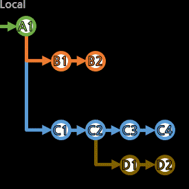

[revert]

특정 커밋들의 반전(＋→－, －→＋) 커밋을 생성하여,
±제로섬(zero-sum)으로 과거와 같은 상황이지만 새로운 커밋으로 작업할 수 있다.
커밋들이 브랜치의 흐름에 포함되어 있지 않아도 지정할 수 있다.
> git revert 반전할_커밋들...
공백을 사이에 두고 여러 커밋ID를 선택할 수도 있고,
(합쳐진 커밋끼리 충돌(conflict)이 존재하면 당연히 수동으로 해결한다. git revert --continue)
> git revert 옛날_커밋ID..최근_커밋ID
공백 없이 ID..ID로, 연속 구간을 선택할 수 있다.
시간상 왼쪽이 예전 것, 오른쪽이 최근 것을 적는다.
[,) 형태로, 옛날_커밋ID는 포함하지만, 최근_커밋ID는 포함하지 않는다(딱 그 전까지만 포함시킨다).
커밋 생성까지 바로 진행되는데,
-n(--no-commit)옵션으로 Stage 상태까지에서 멈출 수 있다.
--no-edit옵션을 주면, 아래처럼 코멘트를 자동으로 작성해준다.
commit 79c06dbeb467d589395fec8254738ba90d7efa32 (HEAD -> a01)
Author: USER <email@address.com>
Date: EEE MMM dd HH:mm:ss yyyy +0900
Revert "fire test"<---- 자동으로 생성된 코멘트
This reverts commit 817ae3685fb17d677dc93ad040a620c5da2227b2.<---- 자동으로 생성된 코멘트
...
merge 커밋을 지정하여 revert하려면 추가적인 옵션이 필요하다.
> git log
commit 7651d26b91fac3fa0a13cbaca5fd2d249585f91a (HEAD -> a01, origin/a01)
Merge: 54cd13d aa4b9a1<---- 순서 확인
Author: USER <email@address.com>
Date: EEE MMM dd HH:mm:ss yyyy +0900
Merge remote-tracking branch 'refs/remotes/origin/a01' into a01
...
log를 통해 Merge: 부분의 순서를 확인한다.
> git revert -m 순서(1부터) 반전할_병합커밋
순서에 맞는 방향으로 돌아간 것처럼 revert된다.
[revert]는 수정 없이도 과거 처럼 될 수 있도록 작업하지만,
떠올리는 개념상 [reset]을 먼저 말하고 다른 방법으로써 [revert]를 소개했다.
이제 마저 기존 커밋들을 수정하는 작업들을 보러 가자.
수정끝판왕 [rebase 알아보기...]
